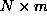
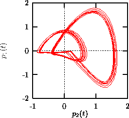
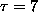

The idea is to introduce a new set of orthonormal basis vectors in embedding space such that projections onto a given number of these directions preserve the maximal fraction of the variance of the original vectors. In other words, the error in making the projection is minimized for a given number of directions. Solving this minimization problem [31] leads to an eigenvalue problem. The desired principal directions can be obtained as the eigenvectors of the symmetric autocovariance matrix that correspond to the largest eigenvalues. The alternative and formally equivalent approach via the trajectory matrix is used in Ref. [32]. The latter is numerically more stable but involves the singular value decomposition of an  matrix for N data points embedded in m dimensions, which can easily exceed computational resources for time series of even moderate length [33].
In almost all the algorithms described below, simple time delay embeddings can
be substituted by principal components. In the TISEAN project (routines
pca, pc), principal components are only provided as a stand-alone
visualization tool and for linear filtering [34], see
Sec.  below. In any case, one first has to choose an
initial time delay embedding and then a number of principal components to be
kept. For the purpose of visualization, the latter is immediately restricted
to two or at most three. In order to take advantage of the noise averaging
effect of the principal component scheme, it is advisable to choose a much
shorter delay than one would for an ordinary time delay embedding, while at
the same time increasing the embedding dimension. Experimentation is
recommended. Figure
below. In any case, one first has to choose an
initial time delay embedding and then a number of principal components to be
kept. For the purpose of visualization, the latter is immediately restricted
to two or at most three. In order to take advantage of the noise averaging
effect of the principal component scheme, it is advisable to choose a much
shorter delay than one would for an ordinary time delay embedding, while at
the same time increasing the embedding dimension. Experimentation is
recommended. Figure  shows the contributions of the first two
principal components to the magneto-cardiogram shown in Fig.
shows the contributions of the first two
principal components to the magneto-cardiogram shown in Fig.  .
.

Figure: Phase space representation of a human magneto-cardiogram using the two largest principal components. An initial embedding was chosen in m=20 dimensions with a delay of  ms. The two components cover 70% of the variance of the initial embedding vectors.